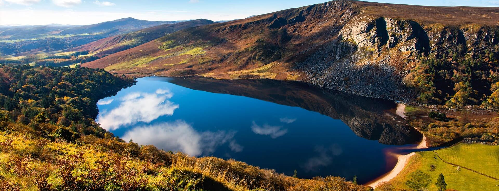

Wicklow & Glendalough
A beautiful escape from Dublin — mountains, lakes, forest roads and the peaceful scenery that makes Wicklow one of the most loved day trips in Ireland. This tour is perfect when you want nature, iconic views, and a relaxed itinerary with time to actually enjoy each stop.
We can include panoramic viewpoints, quiet scenic routes, and plenty of opportunities for photos. If you want to stop for a café, lunch, or a short walk, we plan the timing so the day feels calm — not rushed. Great for visitors who want comfort and flexibility without overplanning.
- Flexible scenic stops for photos
- Time for walking and exploring
- Optional café / lunch stops
- Comfortable return to Dublin